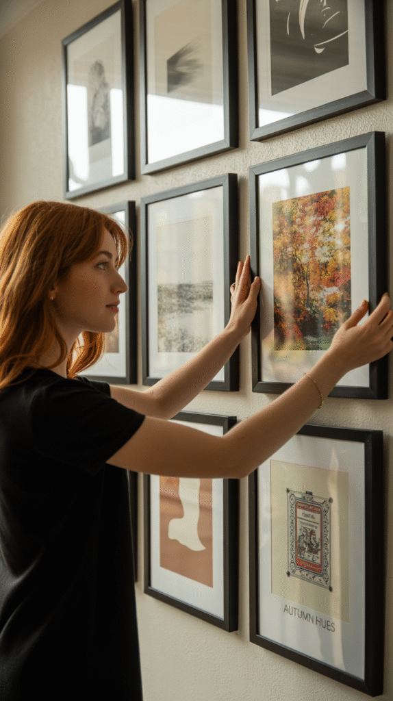
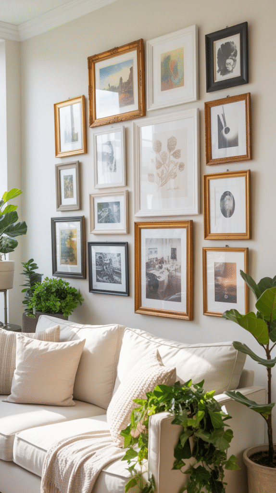
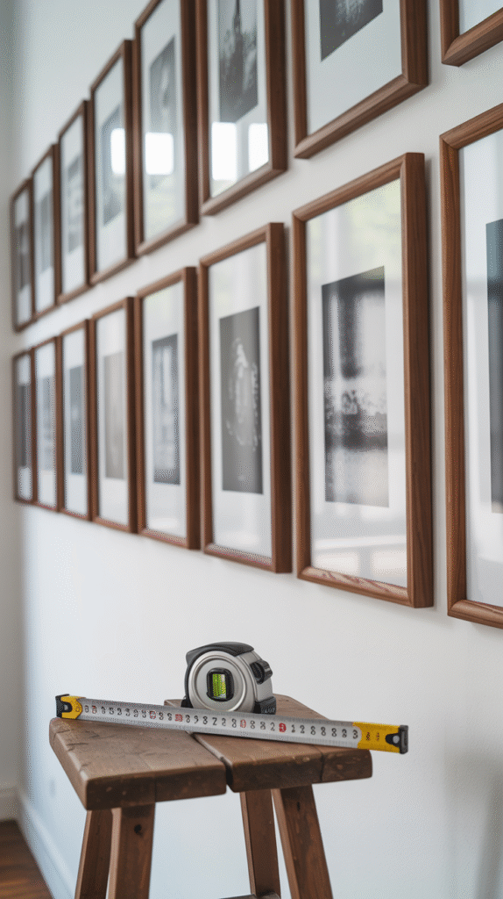
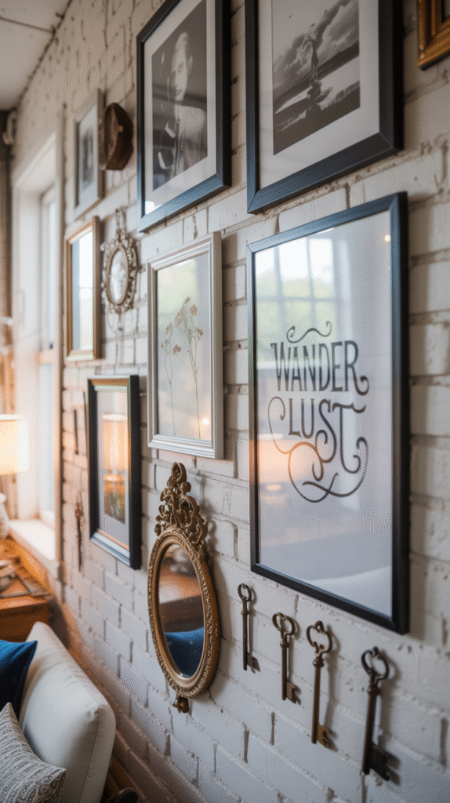
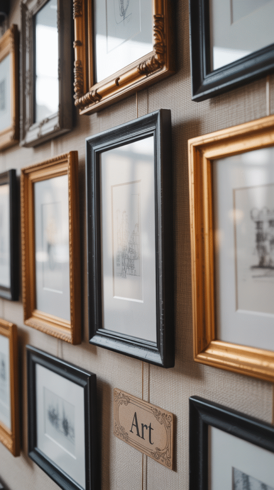
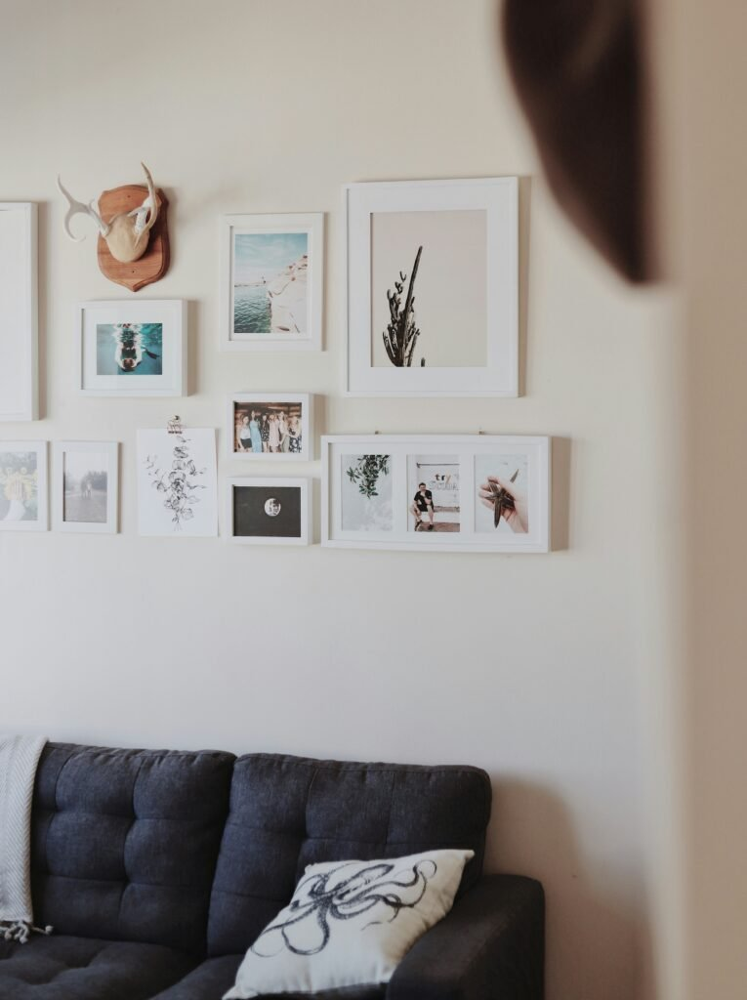
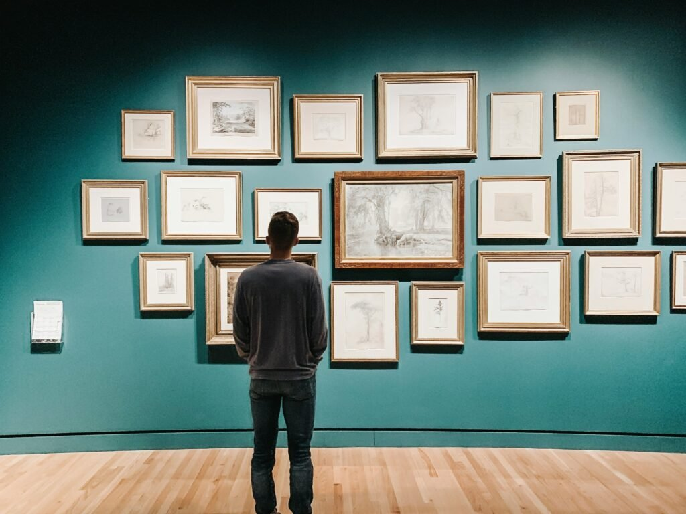
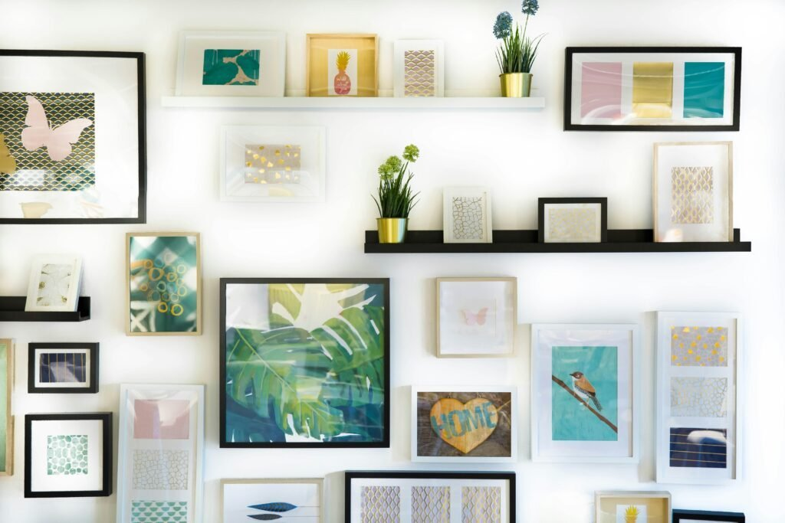

A gallery wall sounds simple right up until the hammer is in hand and a dozen frames are spread across the floor.
The idea is the easy part. The execution is where most attempts either come together beautifully or end up lopsided and abandoned halfway through.
This covers the actual process, not just the concept behind it.

Common Mistakes Worth Avoiding First
Hanging everything too high is the most frequent mistake by far, the center of the arrangement should sit roughly at eye level, not the single top piece.
Skipping the floor layout step and hanging straight onto the wall is the second most common mistake, and it's the hardest one to fix after the fact.
Too many different frame colors with no unifying thread at all rounds out the top three, a mix needs at least one consistent element running through it to read as intentional rather than random.
Updating It Without Starting Over
A gallery wall built with a bit of extra spacing from the beginning makes it much easier to add or swap a piece later without redoing the entire layout.
Keeping a couple of frames empty, or easily swappable, gives the wall room to evolve naturally as new art or photos come along over time.

Making a Mixed Wall Feel Cohesive
Even a deliberately eclectic gallery wall still needs one consistent thread, a recurring color, a shared frame tone, or steady spacing, to avoid reading as cluttered rather than curated.
Stepping back regularly throughout the process, instead of hanging everything in one single go, makes it far easier to catch the moment the mix tips from considered into chaotic.

Getting the Spacing Right
A consistent gap, somewhere around 2 to 3 inches between pieces, reads as intentional, while wildly inconsistent spacing reads as unplanned no matter how good the individual pieces are.
This is one detail genuinely worth measuring rather than eyeballing, since small spacing inconsistencies become far more obvious once the whole wall is actually finished.

What Actually Belongs on the Wall
Art is only one option here, photos, mirrors, small shelves, textiles, and found objects all work alongside or in place of traditional framed pieces.
A wall that mixes in a few of these categories tends to feel more dimensional overall than one filled entirely with flat framed prints.

Do the Frames Need to Match?
A matched frame set reads as clean and coordinated, while a deliberate mix of frame styles reads as collected over time, built piece by piece rather than bought all at once.
A mixed approach works best when it carries some kind of consistency underneath it, the same metal tone, or a shared color family, so it reads as curated rather than simply mismatched.

Planning the Layout First
Laying every single piece out on the floor in the intended arrangement, before a single nail goes anywhere near the wall, saves far more patching and re-hanging than it costs in time upfront.
Tracing each frame onto paper and taping those outlines to the wall is a slower but nearly foolproof version of the same idea, especially for a first attempt.
This step, more than any other, is the single biggest predictor of whether the finished wall ends up looking genuinely intentional.
Theme or Deliberate Chaos
A tightly themed wall, one color palette, one subject, matching frames, reads as more polished and controlled.
A looser, more eclectic mix reads as more collected and personal instead, as long as there's at least one unifying thread tying the whole arrangement together.
Both approaches genuinely work. The real mistake is landing somewhere in between without fully committing to either direction.

Choosing the Right Wall
A wall with enough uninterrupted space, decent natural or ambient lighting, and a clear sightline from the room's main vantage points works best for this kind of project.
A stairwell, a hallway, or the wall behind a sofa are all classic choices for good reason, they get seen regularly without competing with a window or doorway for attention.

Why the Trend Never Actually Fades
A gallery wall solves a genuinely real problem, a blank wall with nothing else planned for it, which is part of why it keeps coming back no matter what broader style trends are doing.
It's also one of the few decor choices that gets more personal and more interesting over time, rather than needing to be replaced the moment trends shift.

Should You Make One?
A gallery wall is worth the effort for almost any blank wall that gets regular foot traffic and visibility.
Plan the layout on the floor first, commit fully to either a clear theme or a genuinely cohesive mix, and leave room built in to update it later.
Handled with even a little planning upfront, it becomes one of the longest-lasting decor choices any wall in the house can get.